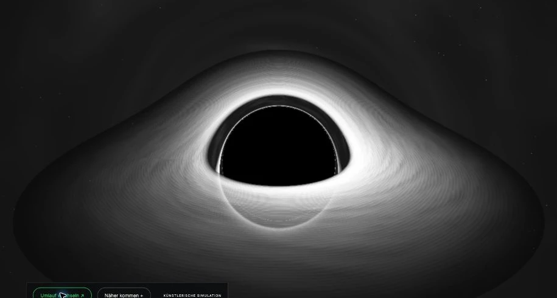

01 / Shell
Konzentrische Stufen führen nach innen, wie Terrassen in einen Trichter. Links und rechts öffnen sie sich zu Lidwinkeln. Es gibt keine Lider. Das Auge ist immer offen.
joel van hees
Ein Auge, das auf Bewegung reagiert. Davor eine Linse, die stillhält.
01 / Das Objekt
Eine weiße Shell. Eine Kuppel aus Metall. Eine Mulde darin. Und davor eine Linse. Nur die Kuppel bewegt sich.
01 / Shell
Konzentrische Stufen führen nach innen, wie Terrassen in einen Trichter. Links und rechts öffnen sie sich zu Lidwinkeln. Es gibt keine Lider. Das Auge ist immer offen.
02 / Kuppel
Gebürstet, seidenmatt, etwa 23 Zentimeter breit. Keine gemalte Iris. Sie wendet sich dir zu, wenn du dich bewegst.
03 / Mulde
Eine weiche Vertiefung in der Mitte. Ihre Dunkelheit kommt aus der Tiefe, nicht aus Farbe. Feine helle Adern laufen von dort nach außen.
04 / Linse
Dünn, transparent, gewölbt. Sie sitzt fest in der innersten Stufe und bewegt sich nie. Auf ihrer Innenseite liegen feine Leiterbahnen. Das Auge schaut immer durch sie hindurch.
60Zentimeter breit
02Bewegungsachsen
01Linse, die stillhält
Render zeigen die angestrebte Wirkung. Stahl und Stein sind Oberflächen, kein Massivmaterial.
Das Auge reagiert auf Bewegung. Bleibst du stehen, verliert es nach ein paar Sekunden das Interesse. Es stutzt, sucht kurz und wird ruhig. Du stehst noch da. Ihm fehlt nichts.
Ein Radarsensor erkennt Anwesenheit, Bewegung und Abstand. Er erkennt keine Gesichter und speichert nichts.
Jeden Morgen setze ich meine Kontaktlinsen ein. Einen Moment lang spüre ich sie. Dann nichts mehr. Die Welt ist scharf.
Eine Brille zeigt offen, dass jemand Hilfe beim Sehen braucht. Eine Kontaktlinse leistet dasselbe und verschwindet dabei aus dem Blick. Irgendwann will ich mich ohne sie nicht mehr denken.
Mit Feeds geht es mir genauso. Sie zeigen mir nicht nur etwas, sie entscheiden, was wichtig wirkt. Sie passen zu mir. Gerade deshalb frage ich irgendwann nicht mehr, warum ich genau diese Bilder sehe.
Auch meine Vergangenheit läuft durch diese Linse. Ein Erinnerungsfeature zeigt mir ausgewählte Fotos. Anderes taucht nie wieder auf. Vergessen heißt hier nicht gelöscht, sondern nie wieder gezeigt.
Die Linse ist nicht schlecht. Sie hilft. Genau deshalb fällt sie mir nicht mehr auf.
joel van hees
Würde ich noch erkennen, wie die Welt ohne die Linse aussah?
03 / Anpassung
Der Psychologe Jean Piaget beschreibt Lernen als Wechsel zwischen zwei Bewegungen. Bei der Assimilation ordne ich Neues in das ein, was ich schon kenne. Bei der Akkommodation ändert sich mein Denken, weil etwas nicht hineinpasst.
Ein personalisierter Feed verschiebt dieses Gleichgewicht. Er passt die Welt an mich an, statt mich an die Welt. Und ich passe mein Verhalten an ihn an. Meine Sicht muss sich dabei nie ändern.
Bei Piaget beginnt Lernen mit Irritation. Ein System, das Irritation zuverlässig entfernt, entfernt auch die Anlässe zu lernen.
Piaget beschreibt die Entwicklung von Kindern. Hier dienen seine Begriffe als Werkzeug zum Nachdenken, nicht als Beweis.
Eine mögliche Werkreihe
I / Im Bau
Die Linse ist neu und fast durchsichtig. Das Auge passt sich noch an.
Weiter scrollen →
II / Konzept
Alles wird ins Erwartete eingepasst. Die Linse fällt nicht mehr auf.
Weiter scrollen →
III / Konzept
Ruhe durch Ausblenden. Nichts stört mehr.
In die Mulde ↓
Teil II und III sind Konzepte. Die Reihe steht erst fest, wenn beide eine eigene Form haben.
Das hellste Licht umgibt die dunkelste Stelle.

In der Mitte der Kuppel liegt eine Mulde. Sie erinnert an eine Pupille und an ein schwarzes Loch. Hinter dem Ereignishorizont kommt nicht einmal Licht zurück. Was dort verschwindet, meldet sich nicht mehr.
NASA / Anatomy of a Black Hole ↗Scanwellen und die Verfolgung der Biene sind Bilder für den Film, keine Funktion des Objekts.
05 / Lesarten
Es braucht keinen Wärter. Die Tür steht offen. Ich entscheide mich jeden Tag wieder für die Welt, die mir angeboten wird, weil sie bequem ist und zu mir passt. Eingeschlossen ist, wer sich kein anderes Draußen mehr vorstellen kann.
Drei Vergleichsbilder, zu denen ich zurückkehre. Lesarten, keine Behauptungen über die Welt.
Platon / Die Höhle
Menschen sehen nur Schatten an der Wand und halten sie für die Welt. Bei Platon sind sie gefesselt. In meiner Arbeit ist die Fessel ein Komfort.
Platon, Politeia, Buch VII
Maya / Ein Schleier
In der indischen Philosophie beschreibt Maya den Schleier, durch den die Welt erscheint. Ich verbinde den Gedanken mit der Kontaktlinse: eine Schicht, die mein Sehen formt und selbst fast unsichtbar bleibt.
Bhagavad Gita / 7.14 ↗Philip K. Dick / Black Iron Prison
Philip K. Dick beschreibt eine Ordnung, die so allgegenwärtig ist, dass niemand sie mehr bemerkt. Für mich ist das kein Bild der Bedrohung, sondern eines der Gewöhnung.
Philip K. Dick, VALIS, 1981
Das Werk moralisiert nicht. Es zeigt einen Zustand.
joel van hees
AKKOMMODATION, 2026
3D Druck, Lack, Linse, Servomotoren, Radarsensor, Steuerung
ca. 60 × 60 × 27 cm
Einzelstück
Stand der Arbeit
Später Bauzustand, Oktober 2026. Die Mechanik läuft. Linse und Steuerung entstehen gerade. Die digitale Ansicht nutzt die aktuelle Geometrie. Hier lenken Cursor, Scroll und Berührung den Blick. Am Objekt reagiert ein Sensor auf Bewegung.
Werkzeuge
Das Werk ist selbst mit algorithmischen Werkzeugen entstanden. Druckdateien, Geometrie und Code habe ich mit Astra 6, Codex und Claude erarbeitet. Auch diese Anpassung gehört zur Arbeit.
Gegenüber
Golan Levins Opto-Isolator (2007) erwidert Blicke. AKKOMMODATION fragt nach der Linse dazwischen und danach, wer verschwindet.